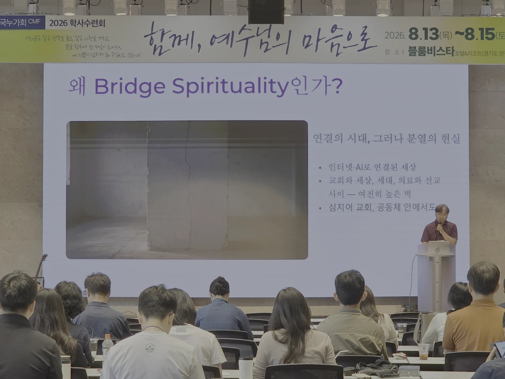
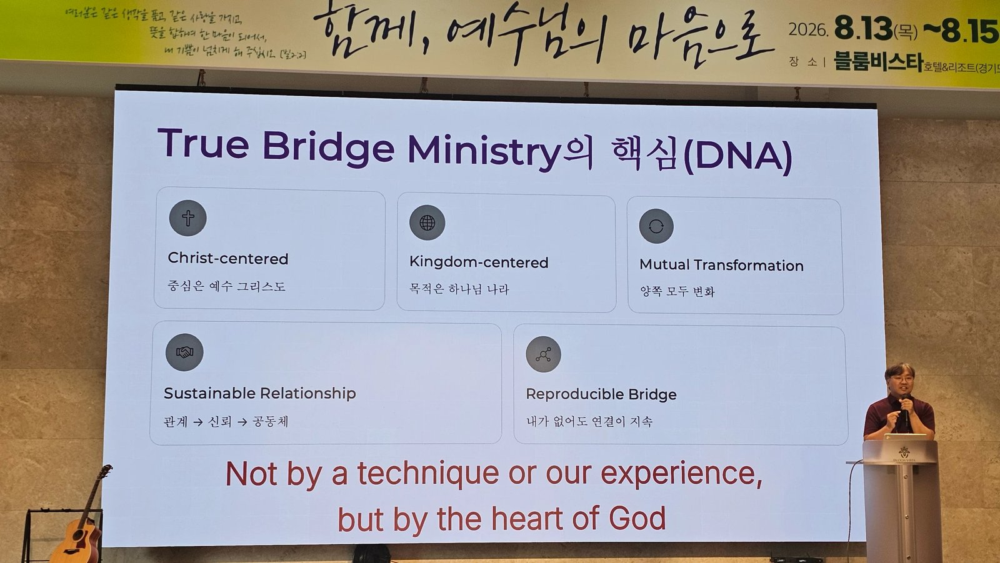

46회 CMF 학사수련회 선택식 특강 1 — 선교부 트랙(금 14:50) · 임선교 누가(아주의대 00졸, 선교부 대표 3년차·선교부 참여 22년, 대학 재직) · 본문 요20:21


SECTION 01
개요·핵심 논지
copy
"아버지께서 나를 보내신 것 같이 나도 너희를 보내노라"(요 20:21). 강사는 이 파송의 말씀에서 한 단어를 길어 올린다 — 브릿지(다리). 하나님의 역사 방식은 벽을 세우는 것이 아니라 있는 벽을 허물고 다리를 놓는 것이었다: 아브라함의 부르심, 출애굽, 그리고 마침내 예수 그리스도 — 스스로 다리가 되어 오신 분(딤전 2:5, "하나님과 사람 사이의 중보자도 한 분이시니"). 그러므로 하나님은 최초의 브릿지 빌더이고, 십자가는 가장 위대한 브릿지이며, 보냄받은 우리는 브릿지 퍼슨이다.
선교는 하나님께서 나를 보내신 자리에서 다리가 되는 삶이다.
연결이 폭발한 시대(인터넷·중개연구·학제 융합)에 벽은 오히려 늘었다 — 교회와 세상, 세대와 세대, 의료인과 일반인, 선교사와 평신도, 심지어 공동체 안에서도(직전 시간 이경애 선배의 초창기 역사 회고를 받아 — "사람이 많으면 담이 생기고 누군가는 상처를 받는 현실을 부인할 수 없다"). 이 특강은 다리의 다섯 속성으로 그 벽 앞에 선 그리스도인의 영성을 그리고, 선교부의 실제 사역 — 특히 몽골팀의 실패와 회복 — 으로 그것을 실증한다. 선교의 정의도 여기서 나온다: "선교는 하나님께서 나를 보내신 자리에서 다리가 되는 삶이다."
★ KEY INSIGHT
다리의 다섯 속성
copy
| 속성 | 내용 | 자기 점검 질문 |
|---|---|---|
| ① 연결한다 | 다리는 이미 연결된 곳이 아니라 단절이 있는 곳에 필요하다. 틈새에 민감한 사람 — 화목하게 하는 직분(고후 5:18), 막힌 담을 허신 그리스도 | 하나님이 내게 보여주시는 갭은 어디인가 |
| ② 양쪽에 닿는다 | 10분의 1만 못 닿아도 다리가 아니다. 양쪽을 동시에 알고 이해해야 한중재가 쏠리지 않는다 — 성육신(인카네이션)의 영성 | 내가 잇는 양쪽 모두가 "저 사람은 우리를 이해한다"고 말하는가 |
| ③ 무게를 감당한다 | 견뎌야 할 희생이 있다 — 비용, 오해("간보는 사람"), 어느 쪽에도 온전히 속하지 못하는 외로움 | 연결의 열매만 원하고 비용은 잊고 있지 않은가 |
| ④ 흘려보낸다 | 다리는 소유하지 않고 통과시킨다. 은혜·사람·정보·기회를 가두면 안 된다 — "내 모임에 사람이 forever 머물기를 바라는 마음"은 리더의 욕심 | 하나님이 맡기신 것이 내게 고여 있는가, 흐르고 있는가 |
| ⑤ 겸손하다 | 다리는 목적지가 아니라 지나가는 길이다 — "그는 흥하여야 하겠고 나는 쇠하여야 하리라" | 내가 없어져도 이 연결은 계속될 것인가 |
예수님은 조직을 만들지 않으셨고 사람만 남기셨습니다.
속성 ④⑤에서 강사의 자기 고백이 정직하다 — 선교부 모임에 50명, 100명 모였으면 좋겠다는 마음이 들 때마다 "그것이 내 개인의 욕심"임을 점검한다는 것. "얼마나 모였느냐는 따라오는 증거일 수는 있어도, 본질은 그 모임 안에 예수 그리스도의 생명이 있는가다." 그리고 대표로서의 기준: "대표가 사라져도 선교부는 존재해야 됩니다. 그 사람 없으면 절대 안 되는 공동체는 하나님이 바라시는 공동체가 아닙니다. 예수님은 조직을 만들지 않으셨고 사람만 남기셨습니다."
SECTION 03
자기 서사 — 경계인에서 다리로
copy
강사의 이력은 다리 개념의 전사(前史)다. 학창 시절부터 어느 그룹에서도 온전한 만족을 못 느끼는 경계인의 감각 — "내가 결국 있을 곳은 어디일까"라는 근원적 질문 — 이 있었고, 졸업 후 기독 동아리·전공의 신앙 모임·황량한 군의관 시절을 지나 선교부에 들어왔다. 그러나 선교부에서도 6~7년은 "솔직히 재미가 없었다" — 모임의 의미를 몰랐고, 남들이 안 나오면 나도 안 나가도 되는 것 아닌가 싶었다. 전환은 하나님이 사람들을 보내시면서 왔다 — "너 여기 떠나지 말고 딱 붙어 있어 봐, 내가 뭔가 보여줄게"라는 경험. 경계인의 감각은 저주가 아니라 다리의 소명이었다는 것이 이 서사의 결이다(속성 ③의 외로움과 정확히 겹친다).
★ KEY INSIGHT
선교부 사역 — 브릿지 관점의 실증
copy
- 사랑의 세겹줄 — 선교 헌신자와 현직 선교사의 온라인 멘토-멘티 연결(작년 시작, 예상보다 활발).
- 단기선교팀 — 6개 지역 파견: 모로코·몽골·이집트·키르기스스탄·태국·마다가스카르(2027 정탐팀 파견 예정). "단기팀에서 장기 선교사들이 나오기를 꿈꿉니다. 그래야 됩니다." (이집트 팀이 곧 곽찬양·최노래 선교사의 AFS와 연결되는 팀이다 — 선택특강2 이집트선교이야기.)
- 연합 — 한국기독의료선교협의회(강사가 의과 부회장, 최일국 총무), 선교한국, ICMDA. "연락처 주고받는 네트워크는 브릿지가 아닙니다" — MOU·행사 공동 개최가 본질이 아니라, 생명이 건너가 새로운 공동체가 탄생하는 것이 브릿지 사역의 핵심.
- 기독 의료인 공동체 세우기 — 캄보디아·몽골·태국의 현지 CMF 공동체를 돕는 사역. 슬라이드의 한 줄 요약들: 캄보디아 "2014년의 한 질문에서 오늘의 살아 있는 CMF 공동체로", 몽골 "수십 년의 기도와 동역이 2025년부터 열매 맺는 중", 태국 "10년 가까이 아홉 번의 수련회". 흐름은 Encounter → Trust → Shared work → Continuity(갈 6:9 "낙심하지 말지니 … 때가 이르매 거두리라").
SECTION 05
몽골팀 — 실패한 팀장의 보고서
copy
이 특강의 백미는 강사의 실패 고백이다. 몽골팀장 11년 — "저는 실패한 팀장입니다. 팀 전체를 섬길 리더 그룹을 만들지 못했어요. 몇 번 팀장을 세웠는데 다 실패했습니다." 2024년 대표가 되고도 몽골 팀장이 없어 포기를 고민하던 때, 충북누가회 이상일 이사장과 전청우가 떠올랐고 — 6~7개월의 설득 끝에 선교부·충북누가회 공동팀이라는 전례 없는 구조가 만들어졌다(속성 ③: "연결의 비용과 긴장을 충북누가회가 고스란히 받아주었습니다. 리더가 서 있어야 되거든요").
몽골인도 아닌 한국인이 와서 이렇게 눈물을 흘리는데 내가 포기할 수 있겠나.
몽골 사역의 뿌리는 깊다 — 한국 CMF의 몽골 섬김은 1990년대 초부터이고, 2011년부터는 매년 30~40명 규모의 단기팀이 갔으며, 2018년 첫 몽·한 연합수련회가 몽골 의치대생 기독 공동체의 비전을 열었다(이상 슬라이드). 그러나 최근 사정은 어두웠다 — 몽골어로 성경공부를 인도할 리더 부재, 빠듯한 재정, 코로나로 수련회 수년 중단, 몽골 CMF 멤버 이탈과 리더 소진, 그리고 아가페병원 김동형 정형외과 선교사(학생 시절 CMF 경험이 없는 분)의 "이제 포기하고 싶다"는 고백(2025년 3월). "한 번만 더 해보자"고 붙들고 간 2025년 연합수련회 — 참석 몽골인은 10명도 안 됐지만, 한국 팀원 한 자매의 눈물 어린 기도를 본 선교사의 마음이 돌아섰다. "몽골인도 아닌 한국인이 와서 이렇게 눈물을 흘리는데 내가 포기할 수 있겠나." 그 뒤 1년 — 몽골어로 성경공부를 인도할 수 있는 30년차 선교사가 "어디서 나타났는지" 등장했고, 2026년 수련회에는 돕는 선교사 세 분이 더 나타났으며, 연합수련회 참석이 60명을 넘었다. 슬라이드는 회복의 방법론도 기록한다 — 성경공부와 의료 강의를 결합해 그룹이 재활성화됐고, 특히 의료인을 꿈꾸는 몽골 고등학생들과의 접점이 생겼다. "하나님은 보이시기도 하고 감추시기도 하는데, 보이실 때는 이유가 있는 것 같아요." 팀의 기준은 명확하다 — "몽골 CMF가 생명력 있는 공동체가 되도록 섬기는 것"(속성 ⑤).
SECTION 06
종합
copy
이 특강은 46회 수련회의 세션들을 하나로 묶는 보이지 않는 접착제 같다. 직전 시간 이경애의 아픈 역사(전체특강1 CMF역사)를 "그들이 부족했다고 욕하면 안 되죠. 우리는 부족하지 않습니까"로 받고, 세대 연결("부모 없는 자식이 어디 있고 선배 없는 후배가 어디 있습니까")을 말하며, 다음날 전체특강 2(전체특강2 우리는왜아직여기있는가)의 핵심 문장들과 놀랍도록 공명한다 — "내가 없어져도 이 연결은 계속될 것인가"는 딤후 2:2 네 세대론의 브릿지 버전이고, "사람을 나와 조직에 의존시키지 않고 예수께 인도한다"는 VPM의 "붙잡아서 남긴 사람은 붙잡는 손이 없어지면 갑니다"와 같은 문장이다. 몽골팀의 공동 리더십 실험은 특강 2가 요구하는 "구조를 바꾸라는 신호로 읽기"(행 6장)의 선교부판 실행 사례이기도 하다.
마무리의 결단 10가지(벽보다 다리가 되겠습니다 · 연결하는 사람이 되겠습니다 · 화해를 선택하겠습니다 · 하나님 나라의 사람이 되겠습니다 · 전문성과 복음을 연결하겠습니다 · 세대와 세대를 연결하겠습니다 · 한국과 세계를 연결하겠습니다 · 기도와 행동을 연결하겠습니다 · 보내심받은 삶을 살겠습니다 · 예수님처럼 세상을 잇는 다리가 되겠습니다)는 회중 통독으로 봉인됐다.
함께 더 생각할 지점
- 브릿지 개념의 계보. 강사 스스로 "브릿지 스피리추얼리티라는 용어가 의외로 흔치 않다"고 밝혔다 — 화해의 직분(고후 5), 성육신 영성, 경계인(liminality) 논의와 잇대면 신학적으로 더 두터워질 개념이다. 이수진 목사의 GHA가 스스로를 "브릿지"로 부르는 것(간증설교 우리는누구인가)과의 우연한 수렴도 흥미롭다.
- 양쪽에 닿는다는 것의 실무. ICMDA 참여의 언어 장벽을 강사도 인정했다 — 영어라는 "한쪽 끝"에 닿는 비용을 누가 어떻게 감당할지는 남은 과제.
교차 참조
- 46회 CMF학사수련회 — 수련회 허브.
- 의료와세상포럼 — 임선교의 94회 발표("의료인의 삶은 몇 가지 모습")와 같은 화자, 같은 방향.
- ICMDA보고와간증 — 국제 브릿지의 실제 사례(캄보디아 CMF 가입).
- 임선교 — 강사.
원본
📖 원본: 수련회 생중계 전사 + 강의 슬라이드 46장(「Bridge Spirituality」). 다섯 속성의 영문 정식 명칭(CONNECTS · TOUCHES BOTH SIDES · BEARS WEIGHT · LETS THINGS FLOW · DOES NOT BECOME THE DESTINATION)과 True Bridge Ministry DNA(Christ-centered · Kingdom-centered · Mutual Transformation · Sustainable Relationship · Reproducible Bridge), "Bridge인가 Bottleneck인가"의 물음, Connect→Empower→Release, Strong Identity + Deep Empathy 등은 슬라이드 표기 기준.